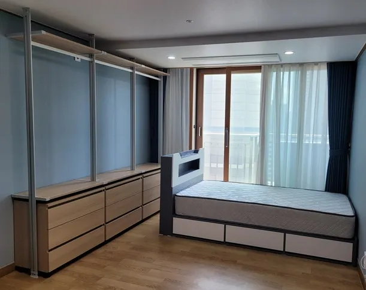

Resize
시스템행거
사이즈 변경 재설치
치수가 안 맞는다고 버릴 필요는 없습니다.
새 방의 벽이 더 짧거나, 천장이 더 낮거나, 창문과 에어컨이 걸려서 기존 행거가 그대로 들어가지 않는 경우가 많습니다. 이럴 때는 칸 수를 줄이거나 두 벽으로 나눠 설치하는 식으로 새 공간에 맞출 수 있습니다.
코니처는 가지고 계신 부품과 새 공간 치수를 비교해 가능한 구성을 먼저 찾습니다. 천장 높이 때문에 폴 길이가 맞지 않는 경우처럼 부품만으로 해결이 어려운 부분은 설치 전에 미리 알려드립니다.

Situations
치수가 달라지는 경우
벽이 더 짧을 때
칸 수를 줄여 설치하고 남는 부품은 정리해 둡니다.
벽이 더 길 때
칸 간격을 조정하거나 남는 자리에 서랍장을 둡니다.
천장이 낮을 때
폴 길이가 맞는지 확인하고 가능한 방법을 안내합니다.
침실 한쪽 벽에만 둘 때
드레스룸 구성을 침실 한쪽 벽 일자형으로 바꿉니다.
Checklist
치수 비교표
| 항목 | 지금 공간 | 새 공간에서 확인할 것 |
|---|---|---|
| 벽 폭 | 행거 전체 폭 | 칸이 모두 들어가는지 |
| 천장 높이 | 폴 길이 | 폴을 그대로 쓸 수 있는지 |
| 깊이 | 선반 깊이 | 문이 열릴 공간이 남는지 |
| 창문 | 위치와 높이 | 선반과 겹치지 않는지 |
| 에어컨·콘센트 | 위치 | 가리지 않게 배치할 수 있는지 |
Process
사이즈를 맞추는 순서
치수 받기
새 공간의 벽 폭, 천장 높이, 창문 위치를 받습니다.
부품 확인
지금 행거의 칸 수와 부속을 사진으로 확인합니다.
구성 제안
새 치수에 들어가는 구성을 정리해 안내합니다.
재설치
정한 구성대로 세우고 남는 부품은 묶어 둡니다.
점검
문 여닫힘과 창문 사용에 불편이 없는지 확인합니다.
FAQ
자주 묻는 질문
폴을 잘라서 높이를 맞출 수 있나요?
제품마다 구조가 달라 사진으로 먼저 확인해야 합니다. 가능 여부와 방법은 설치 전에 안내드립니다.
칸을 줄이면 남는 부품은요?
칸별로 묶어 전달해 드립니다. 나중에 넓은 공간으로 옮기면 다시 쓸 수 있습니다.
벽이 넓어서 허전할 것 같아요
칸 간격을 조정하거나 끝에 서랍장·화장대를 두는 방법이 있습니다.
문이 열리는 공간이 부족하지 않을까요?
선반 깊이와 문이 열리는 반경을 치수로 확인해 배치합니다.
치수를 정확히 못 재겠어요
치수 재는 법 페이지를 참고하시거나, 벽 사진에 줄자를 대고 찍어 보내주세요.